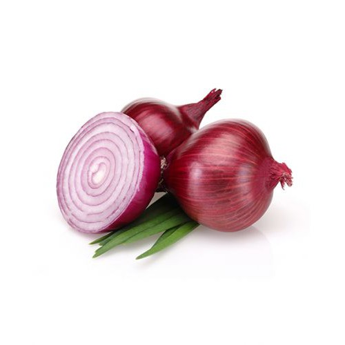
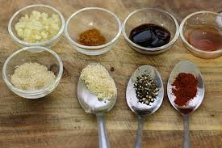

Nguyên Liệu
Thịt ba chỉ
500g
Trứng gà
4 quả
Nước dừa
1 quả

Hành tím
3 củ

Gia vị
Nước mắm, muối, tiêu, đường
Cách Chế Biến
- Thịt ba chỉ rửa sạch, cắt miếng vuông vừa ăn.
- Luộc trứng, bóc vỏ và để riêng.
- Phi thơm hành tím, sau đó cho thịt vào xào đến khi săn lại.
- Cho nước dừa vào, nấu cho đến khi thịt chín mềm.
- Thêm trứng và nêm gia vị vừa ăn, nấu thêm 10 phút.
- Thưởng thức với cơm nóng.